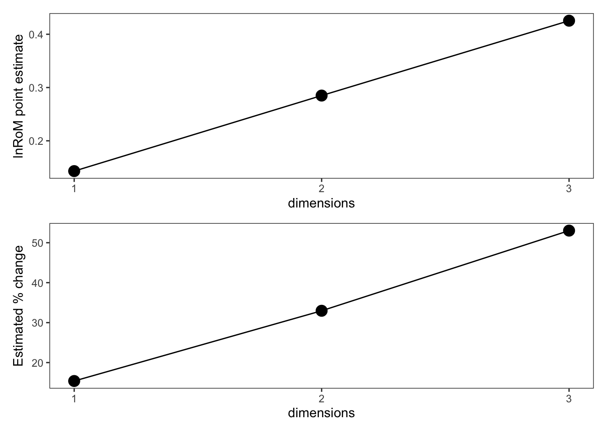
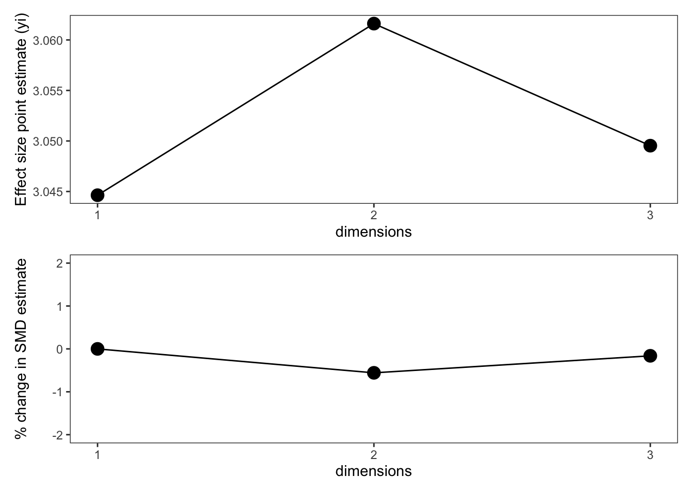

escalc(m1i = 7, sd1i = 1.2, n1i = 15,
m2i = 12, sd2i = 0.9, n2i = 15,
measure = "SMD")
yi vi
1 -4.5864 0.4839 So many options wtf
Effect sizes are not trivial things. They are, in and themselves, small statistical models with their own numeric assumptions and properties. Understanding these assumptions is essential if you want to conduct an accurate and robust meta-analysis and if you want to correctly interpret these effect sizes and the outputs of meta-analytic models.
We here discuss effect sizes for describing continuous outcomes between two discrete groups, such as presented by most experiments.
This is among the most common class of effect sizes, especially in ecology and evolution. These effect sizes compare the mean±error of a continuous predictor measured for two groups, such as an experiment and control group. These effect sizes require the following statistics: 1) means for the treatment and control groups (henceforth \(m_1\) and \(m_2\)), 2) standard deviation for the two groups (\(sd_1\), \(sd_2\)), and 3) sample size for each group (\(n_1\), \(n_2\)).
The effect sizes in this section require standard deviation (\(sd\)) for the treatment and control groups. \(sd\) is fundamentally distinct from standard error (\(se\)). Some meta-analyses have mistaken the two, with egregious results. Be sure to convert all measurements of error to \(sd\). Other commonly reported forms of error include 95% confidence intervals (or 90%), variance, and interquartile ranges (e.g., in boxplots). The extraction package metaDigitise() automatically converts \(se\), interquartile ranges, and 95% CIs to \(sd\).
Just to remind you, here are the relationships between these measurements of error:
\[\begin{aligned} &sd = se * \sqrt{n}\\ &sd = sqrt(Var)\\ &sd = \frac{CI_{upper} - CI_{lower}}{2*1.96} * \sqrt{n} \end{aligned}\]
There are some important differences between SMD and lnRoM, which we summarize here. Don’t stress about understanding all of these topics yet, we’ll go through each one and can hopefully provide practical guidance on choosing the appropriate effect size for your meta-analysis.
I deleted Zmu, a new effect size Shinichi has developed because I don’t think that’ll be published before this is.
| SMD | lnRoM | |
|---|---|---|
| Can be interpreted in plain english | no | yes |
| Accepts values ≤ 0 | yes | no |
| Robust to overdispersion | no? | no |
| Robust to heteroscedasticity | SMDH | ? |
| Robust to dimensionality | somewhat | no |
| Can handle missing error bars | no | yes |
While we want to keep this tutorial light on equations, we’ll briefly give some historic background on the development and math of these effect sizes, which influence the differences in the table above. We’ll only look at the point estimator formulas here (see Appendix for variance estimator options in escalc).
SMD, also known as Hedges’ g, is the bias-corrected version of Cohen’s d. With \(sd\), \(m\), and \(n\) the standard deviation, mean, and sample size of the extracted data for groups 1 and 2, Cohen’s d is defined as:
\[\begin{aligned} &d = \frac{m1-m2}{sd_{pooled}} \\ \end{aligned}\]
\(sd_{pooled}\) is:
\[\begin{aligned} sd_{pooled} = \sqrt{\frac{sd_1^2 (n_1 - 1) + sd_2^2 (n_2 - 1)}{n_1 + n_2 - 2}}\\ \end{aligned}\]
Cohen’s d is an estimator of SMD and can be biased at low sample size. For that reason, Hedges (1981) did some fancy math to create a small-sample size bias correction (\(J\)), which approaches 0 as total \(n\) increases. This formulation is known as Hedges’ g and is the primary estimator of SMD.
\[\begin{aligned} &J = 1-\frac{3}{4*(n_1 + n_2 - 2) - 1}\\ &d = \frac{m1-m2}{sd_{pooled}}\\ &g = J * d \end{aligned}\]
The main take away from these formulas is that the point estimate (both \(d\) and \(g\)) are influenced by standard deviation. Observations with high standard deviation will have a lower overall point estimate. Because this can reduce power, Hedges et al. (1999) later proposed the log-transformed ratio of means, the most widely used effect size in ecology. This does not have standard deviation in the point estimate:
\[\begin{aligned} &lnRoM = log(\frac{m1}{m2}) \\ \end{aligned}\]
The lnRoM point estimate is robust to the standard deviation of the data and thus the point estimate, though not the sampling variance, are more robust to overdispersion. IS THIS TRUE?
However, there is a more pernicious and underappreciated problem with lnRoM-the point estimate doubles for every added dimension in the underlying data (see below where we simulate this).
With two different effect sizes to describe the same type of experimental comparisons, how do we interpret them and convert them to results that people understand and care about?
Imagine we calculated an effect size from this sentence:
“Control groups had a mean of 7 (sd=1.2, n=15) while experimental groups had a mean of 12 (sd=0.9, n=15)”
Sometimes life as a meta-analyzer is that sweet and nice, you can just plunk those numbers directly into your dataset and calculate either SMD or lnRoM. Here is SMD:
escalc(m1i = 7, sd1i = 1.2, n1i = 15,
m2i = 12, sd2i = 0.9, n2i = 15,
measure = "SMD")
yi vi
1 -4.5864 0.4839 However, SMD values are difficult to interpret. We generally use the following rules of thumb:
\(SMD > |0.8| \approx\) strong effect
\(SMD > |0.5| \approx\) moderate effect
\(SMD > |0.2| \approx\) small effect.
In the case above, an SMD of -4.6 can be considered a strongly negative effect.
This is clunky. One of the big advantages of lnRoM is that it (and the overall meta-analytic model estimates) can be converted to % change. Let’s calculate lnRoM with the same summary statistics:
escalc(m1i = 7, sd1i = 1.2, n1i = 15,
m2i = 12, sd2i = 0.9, n2i = 15,
measure = "ROM")
yi vi
1 -0.5390 0.0023 This can be converted to percent change with \(y_i\) as the effect size point estimate:
\[(e^{y_i} - 1) * 100\]
In R:
(exp(-0.5390) - 1) * 100[1] -41.66687Therefore an lnRoM of -0.5390 is equivalent to a -41.6% decrease as a result of the treatment. Being able to convert lnRoM to % change is one of the reasons this effect size is so powerful. However, as we described above, you have to be careful with your assumptions.
Need to discuss what to do with when \(sd = 0\) or when \(m = 0\) for lnRoM. Santi - what you wrote in your music paper was excellent. Want to paraphrase here?
Means±SD bounded between 0 and 1 are challenged by their numeric properties: variance tends to retreat to zero when the mean approaches 0 or 1 (Macartney et al. 2022).
To resolve this for SMD and lnRoM effect sizes, you need to transform both the means and the standard deviations, using an arcsin-square root transformation on the mean and an equation derived using the delta method to standardize the standard deviation (see Macartney et al. (2022)). Where \(m\) is the group mean and \(sd\) is its standard deviation:
\[\begin{aligned} &m' = arcsin(\sqrt{m})\\ &sd' = \sqrt{\frac{sd^2}{4m(1-m)}}\\ \end{aligned}\]
In R:
transformed_mean transformed_sd
0.7753975 0.1091089 And then calculate your effect sizes as normal with the transformed values (\(m'\) and \(sd'\)). Note that your sample size will be the number of sites this proportion was calculated across.
Proportion data is, at its root, discrete-outcome data, like that naturally handled by lnOR effect sizes. It is often possible to reconstruct the underlying discrete-outcome data from author-reported means±sd across trials/sites/islands/etc, which allows you to calculate an lnOR type effect size.
This can help align the unit of replication of this effect size with the rest of your dataset, if the rest of your data treats number of individuals as the unit of replication. Analyzing mean±sd of proportion data with an SMD/lnRoM effect size would likely treat the number of trials/sites/islands/plots as the unit of replication instead, which is likely to underweight this effect size in your models.
To reconstruct the raw binary outcomes from author reported means and sd, see our explanation here and a more general tutorial about reconstructing various data types here
Heteroscedasticity (i.e., differences in variance between the experimental groups) can bias effect sizes considerably. SMD has a special formulation that accounts for heteroscedasticity (Bonett 2009). This is available as the measure ‘SMDH’ in metafor::escalc.
Does heteroscedasticity matter for lnRoM
Are there rules of thumb for heteroscedasticity? Ratio of CV1 to CV2? What threshold?
# Demonstrate in R...SMD and lnRoM assume that the underlying data generation process is normal. This assumption can be broken if the data is overdispersed—which is remarkably common in ecology and evolution, especially with abundance data. This can be a real problem, leading to biased point estimates and sampling variance.
Given that there are yet no effect sizes formulated for overdispersed data, the appropriate way to handle this data is to conduct sensitivity tests both with the full dataset and with overdispersed effect sizes excluded. As you’ll see throughout this tutorial, sensitivity tests are the annoying reality of meta-analysis.
Testing for overdispersion should be part of your analytic workflow. The easiest way to test for overdispersion is to calculate the coefficient of variation (\(CV\)) for your control and treatment groups. \(CV\) is the ratio of standard deviation to the mean (\(sd/x\)).
We consider a \(CV>2\) to be indicative of overdispersion. However, for lnRoM, Lajeunesse (2015) suggested a small sample-size corrected threshold based on the standardized mean, derived from the Geary test Hedges et al. (1999). Let \(m\) be the group mean, \(sd\) be the standard deviation and \(n\) be your group sample size:
Reading Lajeunesse it looks like the standardized mean was proposed for SMD too, prior to development of lnRoM
\[G' = \frac{m}{sd}*\frac{4*n^{3/2}}{1+4*n}\]
There are several suggested thresholds for this value that can be used to exclude potentially overdispersed and problematic data. Lajuennesse suggested excluding values \(\ge3\) , while others have suggested more conservative thresholds such as \(\ge11.11\) (Hayya et al. 1975), \(\ge10\) (Kuethe et al. 2000), and \(\ge4\) (Marsaglia 2006)
Let’s do this in R but with both a CV threshold and the Geary-Lajuennesse threshold of 3, using a dataset provided by the metafor package:
[1] 61.53846It looks like 61% of this dataset has a \(CV>2\). This could be problematic for calculating lnRoM.
[1] 76.92308It looks like ~77% the data in this meta-analysis fails the Geary-Lajuennesse test. So what do you do if that happens? In this case, we’ll use \(CV\), instead of the Geary_Lajuennesse test, to filter out overdispersed values and rerun our models.
An alternative approach is to use the inverse of effective sample size as your meta-analytic model weight, instead of sampling variance. This is a method that produces reasonable meta-analytic estimates, despite ignoring standard deviation (Nakagawa et al. XXXX).
(Shinichi?): Is this only for lnRoM???
Effective sample size is defined as: \[N_{0} = \frac{4n_1n_2}{n_1 + n_2}\\\] Let’s go through a full example, with lnRoM as our effect size.
First we’ll calculate lnRoM point estimates and sampling variance:
dat <- escalc(measure = "ROM",
m1i = m1i, m2i = m2i,
sd1i = sd1i, sd2i = sd2i,
n1i = n1i, n2i = n2i,
data = dat, append = TRUE) |>
setDT()
head(dat) author year n1i m1i sd1i n2i m2i sd2i ai bi ci
<char> <int> <int> <num> <num> <int> <num> <num> <int> <int> <int>
1: Cote 1997 50 2.20 12.73 54 5.20 12.50 NA NA NA
2: Ghosh 1998 140 17.60 24.20 136 34.10 38.80 NA NA NA
3: Hayward 1996 23 0.38 0.56 19 0.23 0.29 NA NA NA
4: Heard 1999 97 2.09 5.93 94 2.66 4.95 34 63 36
5: Ignacio-Garcia 1995 35 4.92 6.05 35 20.00 26.34 24 11 29
6: Knoell 1998 45 0.85 4.75 55 2.31 9.16 NA NA NA
di type cv1 cv2 gl1 gl2 yi vi
<int> <int> <num> <num> <num> <num> <num> <num>
1: NA 1 5.786364 2.403846 1.215943 3.042876 -0.8602013 0.77664890
2: NA 1 1.375000 1.137830 8.589868 10.230445 -0.6613985 0.02302400
3: NA 1 1.473684 1.260870 3.219322 3.412161 0.5020919 0.17809697
4: 58 1 2.837321 1.860902 3.462259 5.196212 -0.2411621 0.11983366
5: 6 1 1.229675 1.317000 4.776972 4.460229 -1.4024237 0.09275969
6: NA 1 5.588235 3.965368 1.193783 1.861780 -0.9997665 0.97985737Now let’s run an intercept only model with vi as our meta-analytic weight (taken by the argument ‘V’). Note that there is only one effect size per article, which is reflected in our random effect formula:
m1 <- rma.mv(yi,
V = vi,
random = ~ 1 | author,
data = dat)Now, let’s run a model excluding the overdispersed data:
# Now let's run a sensitivity analysis by excluding overdispersed data
m2 <- rma.mv(yi,
V = vi,
random = ~ 1 | author,
data = dat[cv1 <= 2 & cv2 <= 2, ])Finally, let’s run a model using the inverse of effective sample size as our weight.
dat[, effective_N := (4*n1i*n2i)/(n1i+n2i)]
m3 <- rma.mv(yi,
V = 1/effective_N,
random = ~ 1 | author,
data = dat)Let’s compare these:
It looks like the sensitivity analyses (CV <= 2 and 1/effective_N) both produced similar results which were more conservative than when the entire dataset was analyzed.
To summarize here are some solutions for overdispersed data. These methods, which unfortunately are rarely used and little known, should be commonplace in ecology, where overdispersed abundance data is common.
| Method | Which effect sizes |
|---|---|
| CV test | SMD, lnRoM |
| Geary-Lajeunesse test | lnRoM, SMD??? |
| 1/effective N isntead of variance | lnRoM, SMD? |
| ??? |
The effect sizes in this section are standardized, which allow us to compare results across studies even if their units were grossly different. However, what if one study measured a response in meters but another study measured it in area (\(m^2\)) and a third study measured the same response in volume (\(m^3\))? Imagine vegetation studies or morphological measurements of an organism. Depending on the effect size you choose, the results can be strongly affected by these added dimensions—which is a largely overlooked problem in meta-analysis.
For lnRoM, this is a very serious problem, with effect sizes estimates increasing with each added dimension.
Let us demonstrate. We’ll create a starting dataset at one dimension and then we’ll increase the dimensions from 1 to 2 and 3, by recreating the underlying distribution, recalculating our summary statistics, and calculating SMD or lnRoM effect sizes:
# Simulate data for two groups
sim1 <- rnorm(n = 1e8, mean = 15, sd = .6)
sim2 <- rnorm(n = 1e8, mean = 13, sd = .7)
# First dimension:
dim1.1 <- sim1
dim1.2 <- sim2
# Second dimension simulated data for groups 1 and 2
dim2.1 <- sim1^2
dim2.2 <- sim2^2
# Third dimension simulated data for groups 1 and 2
dim3.1 <- sim1^3
dim3.2 <- sim2^3
# Create a data.table of the summary statistics:
dat <- data.table(m1 = c(mean(dim1.1), mean(dim2.1), mean(dim3.1)),
m2 = c(mean(dim1.2), mean(dim2.2), mean(dim3.2)),
sd1 = c(sd(dim1.1), sd(dim2.1), sd(dim3.1)),
sd2 = c(sd(dim1.2), sd(dim2.2), sd(dim3.2)),
n1 = 50,
n2 = 50,
dimensions = c(1, 2, 3))
dat <- escalc(measure = "ROM",
m1i = m1, m2i = m2,
sd1i = sd1, sd2i = sd2,
n1i = n1, n2i = n2,
data = dat,
var.names = c("yi_rom", "vi_rom"))
dat <- escalc(measure = "SMD",
m1i = m1, m2i = m2,
sd1i = sd1, sd2i = sd2,
n1i = n1, n2i = n2,
data = dat,
var.names = c("yi_smd", "vi_smd")) |>
setDT()
# dat
dat <- eff_size(effect_type = "Z_mean",
x1 = m1, x2 = m2,
sd1 = sd1, sd2 = sd2,
n1 = n1, n2 = n2,
verbose = FALSE,
paired = FALSE,
data = dat)
setnames(dat, c("yi", "vi"), c("yi_Zmu", "vi_Zmu"))
# Convert ROM to % change:
dat[, percent_change := (exp(yi_rom) - 1) * 100]
#
p1 <- ggplot(data = dat,
aes(x = dimensions, y = yi_rom))+
geom_path()+
geom_point(size = 4)+
ylab("lnRoM point estimate")+
scale_x_continuous(breaks = c(1, 2, 3))+
theme_bw()+
theme(panel.grid = element_blank(),
legend.position = "none")
p2 <- ggplot(data = dat,
aes(x = dimensions, y = percent_change))+
geom_path()+
geom_point(size = 4)+
ylab("Estimated % change")+
scale_x_continuous(breaks = c(1, 2, 3))+
theme_bw()+
theme(panel.grid = element_blank(),
legend.position = "none")
p1 / p2
As you can see, the lnRoM effect size doubled and then tripled as the dimensions increased. In ecology and evolutionary biology, which commonly pool measurements at different dimensions, this is obviously a huge problem!
Now let’s look at SMD. Since the y axis values are not comparable, we’ll plot the raw SMD as well as the difference of each dimension to the first dimension, to indicate how large of an effect dimensionality had on the strength of the SMD estimate in reference to our rules of thumb

Even though SMD is mostly dimension-free, it’s still slightly affected by the change in dimensions.
For this reason, we suggest that if you are committed to using an lnRoM effect size, that you record the number of dimensions of each measurement. You can use divide the resulting effect size point estimate by the number of dimensions to revert dimensionality. However, there may be many cases where the number of dimensions of the measurement is unclear. In this case, we recommend using SMD.
It is possible to use cross-study average coefficient of variation (\(CV\)) to calculate lnRoM point estimates and sampling variance for studies that did not report error. This can potentially salvage a large number of effect sizes that would otherwise be excluded if using an SMD effect size. This is an advantage to using lnRoM effect sizes, if the other assumptions (especially dimensionality) are met.
Alternative variance estimators for SMD and lnRoM can account for paired designs, that is for correlated variance between groups 1 and 2. Effect sizes derived from paired designs can be compared directly to those from unpaired designs, as long as you’re using the same effect size (e.g., within the SMD or lnRoM family).
In paired design estimators, the variance estimation formulas accept an additional argument \(r\)-the correlation between plots or individuals. Since \(r\) is usually unknown and unreported, it’s general practice to set it to 0.5 or 0.8 and to run sensitivity analyses to ensure that that choice isn’t unduly influencing your model estimates.
The correlation between groups, \(rho\) (ri in escalc) is rarely reported and so needs to be assigned based, basically, on guesswork. We’d suggest that if the pairing is within an individual or plot (e.g., before-after a treatment), then a \(rho\) of 0.8 seems reasonable. However, if the pairing is based on spatially paired but independent plots (e.g., adjacent to each other) then a rho of 0.5 would be more reasonable.
Be sure to always conduct sensitivity analyses on these choices, to ensure that they aren’t unduly changing your model estimates.
If group 1 and 2 are paired (e.g., in a before-after design), you can calculate a paired lnRoM with the following code. Note that you only supply a single value for sample size (ni) instead of n1i and n2i because a paired design must by definition have equal sample sizes in each treatment. Paired lnRoMs will have the same point estimate (yi) as their unpaired flavor but will have lower variance and thus higher weight in your meta-analytic models.
# First, unpaired:
unpaired <- escalc(m1i = 7, sd1i = 1.2,
m2i = 12, sd2i = 0.9,
n1i = 15, n2i = 15,
measure = "ROM",
var.names = c("yi_unpaired", "vi_unpaired"))
# Now, the paired version:
paired <- escalc(m1i = 7, sd1i = 1.2,
m2i = 12, sd2i = 0.9,
ni = 15, ri = 0.8,
measure = "ROMC",
var.names = c("yi_paired", "vi_paired"))
cbind(unpaired, paired)As you can see, the point estimate remained the same but the variance was reduced in the paired formulation, leading to a stronger influence in the meta-analytic models.
For SMD, there is also a paired version that is comparable to non-paired values (e.g., you can include both in the same analysis). However, to the best of our knowledge, these are not available in escalc.
There are several other options available in escalc to account for paired designs. However, these are not comparable to standard unpaired SMD measures. And for that reason should only be used if the entire meta-analysis is of the same design. See the cheatsheet where we attempt to clear up these (in)compatibilities. For that reason, you need to use our function eff_size:
unpaired <- eff_size(x1 = 7, sd1 = 1.2,
x2 = 12, sd2 = 0.9,
n1 = 15, n2 = 15,
paired = FALSE,
verbose = FALSE,
effect_type = "SMD")
setnames(unpaired, c("yi", "vi"), c("yi_unpaired", "vi_unpaired"))
paired <- eff_size(x1 = 7, sd1 = 1.2,
x2 = 12, sd2 = 0.9,
n = 15, r = 0.5,
paired = TRUE,
verbose = FALSE,
effect_type = "SMD")
setnames(paired, c("yi", "vi"), c("yi_paired", "vi_paired"))
cbind(unpaired, paired)